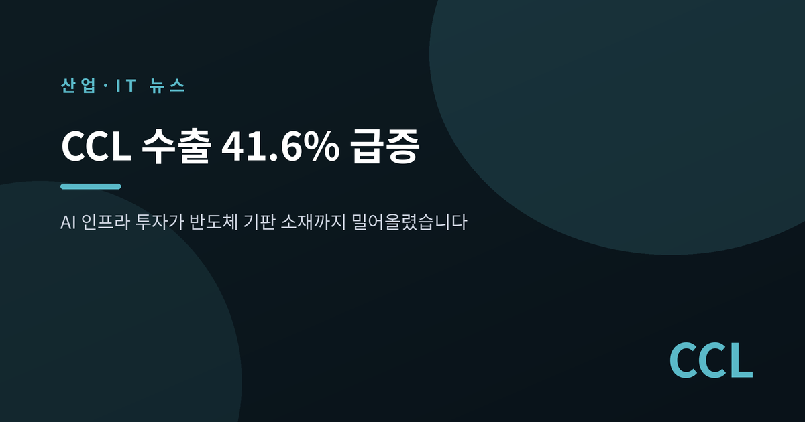
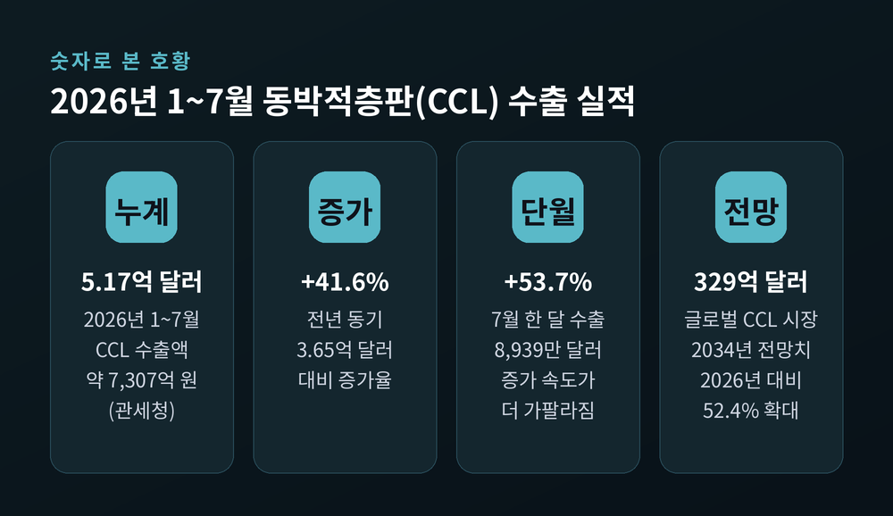
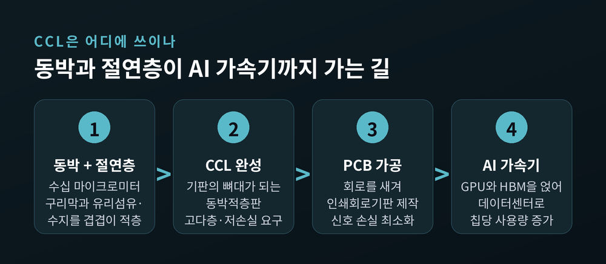
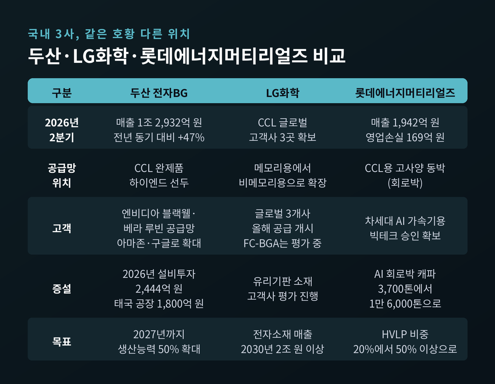
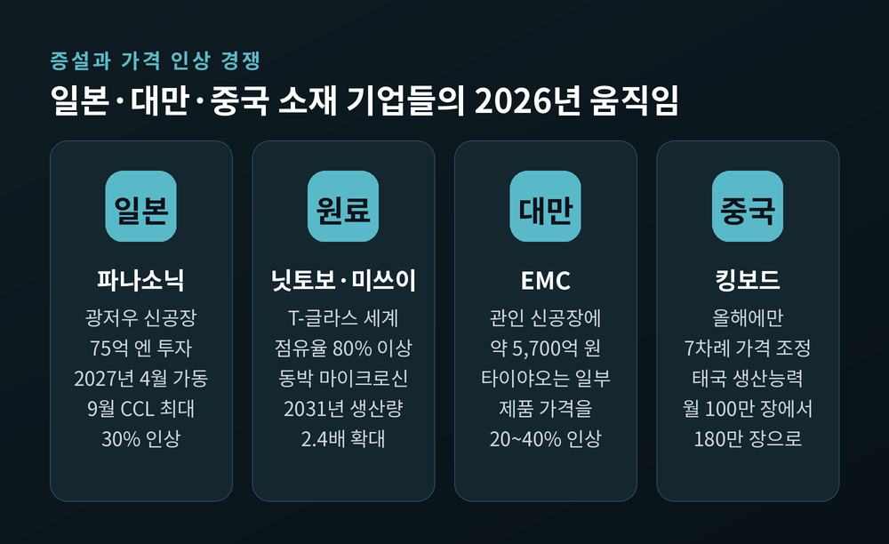
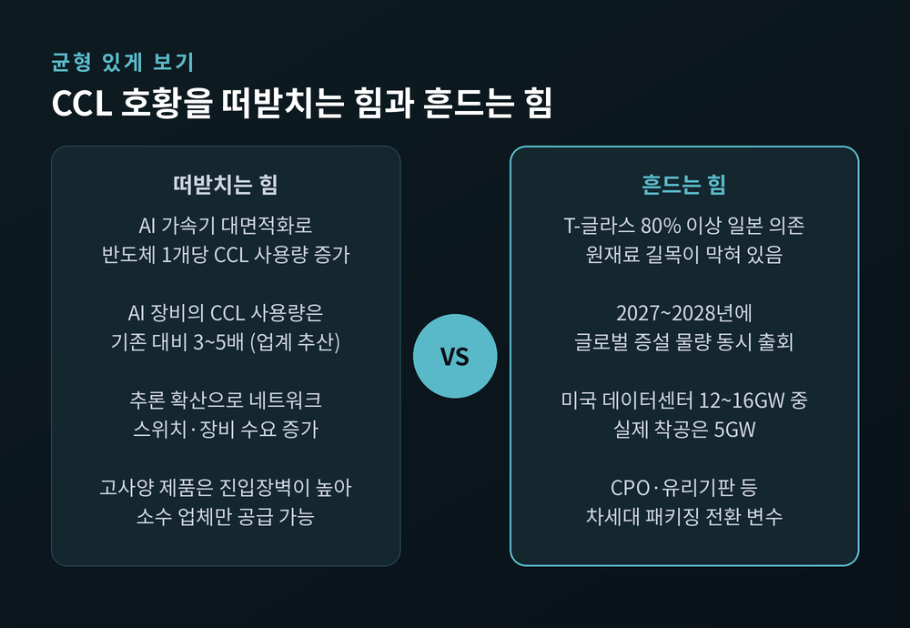

이번 글에서는 AI 인프라 투자가 반도체 '기판 소재'까지 밀어올린 흐름을 정리해 보겠습니다. 이름조차 낯선 소재 하나가 수출 통계의 앞자리로 올라온 이야기입니다.

관세청 집계로 2026년 1~7월 동박적층판(CCL) 수출액은 5억 1,733만 달러였습니다. 우리 돈으로 약 7,307억 원입니다. 지난해 같은 기간 3억 6,516만 달러와 비교하면 41.6% 늘었습니다.
더 눈에 띄는 것은 속도입니다. 7월 한 달 수출액만 8,939만 달러로, 전년 동월 5,817만 달러 대비 53.7% 급증했습니다. 연초보다 하반기로 갈수록 증가율이 가팔라지고 있다는 뜻입니다.
시장 전체의 크기도 커지고 있습니다. 시장조사업체 포천비즈니스인사이츠는 글로벌 CCL 시장이 2026년 216억 2,000만 달러에서 2034년 329억 5,000만 달러로 52.4% 확대될 것으로 내다봤습니다. 한 곳의 전망치이므로 숫자 자체를 확정으로 받아들일 필요는 없습니다. 다만 방향은 분명합니다.

CCL은 동박적층판(Copper Clad Laminate)의 줄임말입니다. 수십 마이크로미터 두께의 구리막인 '동박'과 전기가 통하지 않는 절연 소재를 여러 층으로 겹쳐 만든 판입니다. 반도체 아래에 깔리는 인쇄회로기판(PCB)의 뼈대라고 보시면 됩니다.
동박은 그 위에서 실제로 전기 신호가 흐르는 구리막입니다. AI용으로는 표면 거칠기를 극도로 낮춘 HVLP 동박이나 극박 같은 고사양 제품이 필요합니다. 기술 진입장벽이 높아 세계적으로도 소수 업체만 만듭니다.
예전의 CCL은 값싼 범용 부자재에 가까웠습니다. 지금은 성능을 좌우하는 부품에 가깝습니다. 이유는 세 가지입니다.
첫째, AI 서버와 네트워크 장비는 GPU와 칩 사이에서 막대한 데이터를 초고속으로 주고받습니다. 신호가 새지 않도록 기판이 고다층·저손실로 바뀌어야 합니다. 둘째, AI 가속기의 칩이 커지면서 기판 면적도 함께 커졌습니다. 반도체 한 개당 들어가는 CCL의 양 자체가 늘어난 셈입니다. 셋째, 업계에서는 AI 장비의 CCL 사용량이 기존 대비 3~5배 수준이라고 추산합니다.
수요가 늘어난 정도가 아니라, 요구하는 스펙이 통째로 올라갔습니다.

가장 선명한 수혜는 두산입니다. 전자소재를 맡은 전자비즈니스그룹(BG)의 2026년 2분기 매출은 1조 2,932억 원이었습니다. 전년 동기 8,787억 원 대비 47% 증가한 수치입니다. 2025년 연간 매출도 1조 8,751억 원으로 전년보다 87% 늘었습니다.
공장은 이미 한계를 넘겼습니다. 2분기 평균 가동률이 충북 증평 109.8%, 경북 김천 102.7%를 기록했습니다. 100%를 넘긴다는 것은 설비를 정비 시간까지 깎아가며 돌리고 있다는 의미입니다.
투자 규모의 변화도 극적입니다. CCL 설비투자가 2024년 386억 원, 2025년 896억 원이었는데 2026년 계획은 2,444억 원입니다. 전년 대비 172% 늘어난 규모입니다. 2028년 계획치는 2,870억 원으로 잡혀 있습니다. 여기에 약 1,800억 원을 들여 태국에 AI 인프라·네트워크 장비용 CCL 공장을 짓고 2028년 하반기 양산을 목표로 하고 있습니다.
배경에는 고객사가 있습니다. 두산은 엔비디아의 AI 가속기 블랙웰과 베라 루빈 공급망에 주요 CCL 공급사로 진입한 것으로 알려졌습니다. 아마존과 구글로 고객 저변도 넓어지는 추세입니다.
같은 호황이라고 해서 성적표가 같지는 않습니다.
LG화학은 2026년 2분기 실적 발표회에서 CCL 사업에서 글로벌 고객사 3곳을 확보했다고 밝혔습니다. 메모리용 중심이던 사업을 비메모리용으로 넓히는 과정입니다. FC-BGA용 CCL과 유리기판 소재는 아직 고객사 평가 단계에 있습니다. 회사는 전자소재 매출을 2025년 1조 원에서 2030년 2조 원 이상으로 키우겠다는 목표를 제시했습니다.
롯데에너지머티리얼즈의 위치는 조금 다릅니다. CCL용 고사양 동박 공급을 늘리고 있지만, 2026년 2분기 실적은 매출 1,942억 원에 영업손실 169억 원이었습니다. 전년 동기 손실 311억 원보다 적자 폭을 45.7% 줄였을 뿐 아직 흑자는 아닙니다.
다만 방향은 잡혀 있습니다. 익산공장의 AI 회로박 생산능력을 3,700톤에서 올해 6,700톤으로 늘렸고, 2027년 상반기에는 1만 6,000톤까지 확대할 계획입니다. HVLP 제품 비중도 현재 20% 수준에서 증설 완료 후 50% 이상으로 올리겠다고 밝혔습니다.
호황의 물결이 모두를 똑같이 들어 올리지는 않습니다. 어느 위치에서, 어떤 등급의 제품을 만드느냐가 결과를 가릅니다.

가격 인상은 전방위로 번지고 있습니다. 일본 파나소닉은 9월 1일부터 일반 다층기판용 CCL 가격을 30% 올립니다. 고속·저손실 브랜드인 메그트론과 XPEDION은 15%, 반도체 패키지 기판용 CCL은 30% 인상합니다. 이미 5월과 8월에 두 차례 올린 뒤의 추가 인상입니다.
중화권도 마찬가지입니다. 중국 킹보드는 올해에만 일곱 차례 가격을 조정했습니다. 대만 타이야오는 일부 제품을 20~40% 올렸고, 타이광전과 롄마오도 약 10% 인상에 나섰습니다.
문제는 인상의 원인입니다. 수요만이 아니라 원재료 수급이 함께 작용하고 있습니다. 그리고 그 원재료의 길목을 일본이 쥐고 있습니다.
대표적인 것이 유리섬유입니다. 열팽창계수가 낮아 대면적 패키지의 휘어짐을 잡아주는 T-글라스는 일본 닛토보가 세계 수요의 80% 이상을 공급합니다. 시장조사업체 프리스마크는 닛토보 제품 기준 공급 부족이 2027년에도 이어지고 2028년에는 격차가 더 벌어질 것으로 전망했습니다. 국내에서는 두산전자와 LG화학이 이 T-글라스를 받아 CCL을 만들어 기판 업체에 공급합니다.
동박도 비슷합니다. 반도체 패키지 기판용 동박의 글로벌 선두인 일본 미쓰이금속은 '마이크로신'의 2031년 생산량을 2025년의 2.4배인 월 1,200만 제곱미터로 늘릴 계획입니다.
정리하면 이렇습니다. 한국은 CCL이라는 중간 공정에서 하이엔드 진입에 성공했습니다. 그러나 그 위의 원재료 단계는 여전히 일본이 잡고 있습니다. 아래에서는 대만과 중국이 캐파와 가격으로 밀고 올라옵니다. 지금의 호황을 '수직계열화된 우위'로 읽으면 곤란한 이유입니다.

증설은 이미 시작됐습니다. 파나소닉은 75억 엔을 들여 중국 광저우에 새 CCL 공장을 짓고 2027년 4월 가동을 목표로 합니다. 대만 EMC는 관인 신공장에 약 5,700억 원을 투자하기로 했습니다. 킹보드는 태국 생산능력을 월 100만 장에서 180만 장까지 단계적으로 늘립니다. 두산의 태국 공장도 2028년 하반기 양산입니다.
업계 관계자는 "제품군 전체 수요가 높아 아무리 못해도 내후년까지는 공급 부족이 이어질 것"이라고 말합니다. 반가운 전망입니다만, 뒤집어 읽으면 그 이후는 아무도 장담하지 못한다는 뜻이기도 합니다. 증설 물량이 한꺼번에 쏟아지는 시점이 2027~2028년에 몰려 있기 때문입니다.
전방의 신호도 마냥 밝지는 않습니다. 상위 5개 하이퍼스케일러의 2026년 설비투자는 약 7,100억 달러 규모로 추정됩니다. 그런데 2026년 가동을 목표로 계획된 미국 데이터센터 12~16기가와트 가운데 실제 착공에 들어간 것은 5기가와트에 그쳤습니다. 절반 가까이가 중단되거나 지연될 위기라는 분석이 나옵니다. 부품 인도 기간이 2년에서 최대 5년까지 늘어나는 병목도 겹쳤습니다.
투자 규모 대비 수익성을 묻는 목소리도 커졌습니다. 데이터센터가 완공돼야 서버가 들어가고, 서버가 들어가야 소재 매출이 실현됩니다. 계획과 실물 사이의 간격이 벌어지면 그 부담은 공급망 아래쪽까지 내려옵니다.

AI 인프라의 무게중심이 대규모 학습에서 추론으로 옮겨가는 중입니다. 이 변화는 기판 수요의 성격도 바꿉니다. CPU와 스토리지를 잇는 프론트엔드 네트워크 수요가 빠르게 늘고, 앞으로 프론트엔드 데이터센터 스위치 매출 증가분의 절반 이상을 AI 관련 수요가 차지할 것이라는 전망이 있습니다. 스위치와 네트워크 장비는 고다층·저손실 CCL을 많이 쓰는 영역입니다.
반대 방향의 변수도 있습니다. CPO, 즉 광학 공동패키징입니다. 광학 엔진을 스위치 칩에 직접 붙여 칩 사이 데이터를 전기가 아니라 빛으로 보내는 기술입니다. 엔비디아는 초당 409.6테라비트를 처리하는 광패키징 이더넷 스위치 '스펙트럼-X 포토닉스'를 2026년 하반기에 내놓습니다. 전력 소비가 기존 광모듈 방식의 약 3.5분의 1이라고 합니다. 차세대 플랫폼에서는 구리 기반 백플레인이 네이티브 CPO 구조로 바뀔 것이라는 관측도 나옵니다.
구리가 빛으로 대체되는 흐름이 CCL 수요에 어떤 영향을 줄지는 아직 단정하기 어렵습니다. 기판 자체가 사라지지는 않을 테고, 유리기판처럼 새로운 소재 경쟁이 열릴 가능성도 있습니다. 다만 지금의 호황이 영원한 구조가 아니라는 점만은 기억해 둘 만합니다.
끝으로 한 마디만 더 드리겠습니다.
이번 통계가 알려주는 것은 단순한 실적 개선이 아닙니다. AI 투자가 GPU와 메모리를 지나 그 아래 소재까지 내려왔다는 신호입니다. 동시에 그 소재의 원료는 여전히 남의 손에 있다는 사실도 함께 드러났습니다.
"호황은 실력을 증명하는 동시에, 아직 못 가진 것을 선명하게 비춥니다."
수출 41.6%라는 숫자가 반가운 이유와 마음을 놓기 어려운 이유는 같은 자리에 있습니다. 몇 년 뒤 이 통계를 다시 꺼내 볼 때 무엇이 달라져 있을지는, 지금 어디에 투자하느냐에 달려 있을 것입니다.
※ 이 글은 공개된 보도와 통계를 정리한 정보 제공 목적의 글이며, 특정 기업에 대한 투자 권유가 아닙니다. 언급된 수치는 각 시점의 발표 자료를 기준으로 하며 이후 달라질 수 있습니다. 투자 판단과 그에 따른 책임은 투자자 본인에게 있습니다.